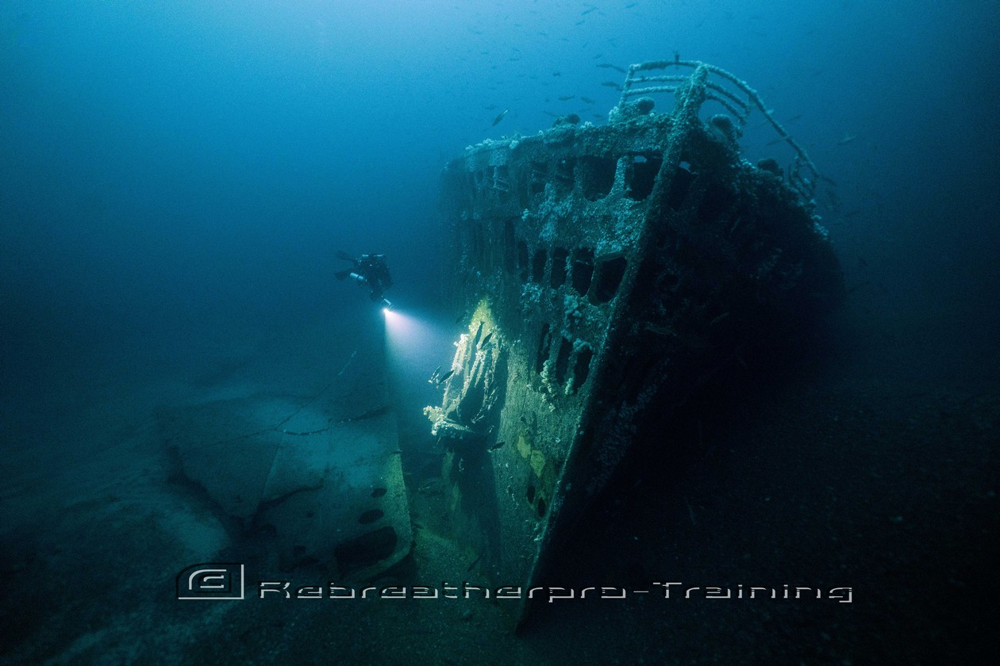

Scuba diving is my favourite hobby. I love the adventure of the underwater world. I have explored reefs and shipwrecks all around the United Kingdon, Egypt, and Thailand.

I will dive almost anything, the sea,inland quarries, I have even dived in my local canal! But here are 3 dives from my bucket list.
I have lots of scuba diving equipment, some for diving in cold water, and some for diving in warm water.
Here is a quote from SSI's website:
With 71% of the earth being covered with water, it is no wonder we are so fascinated with what lies beneath the surface. In fact, scientists estimate that there are nearly 1 million different species of aquatic animals.